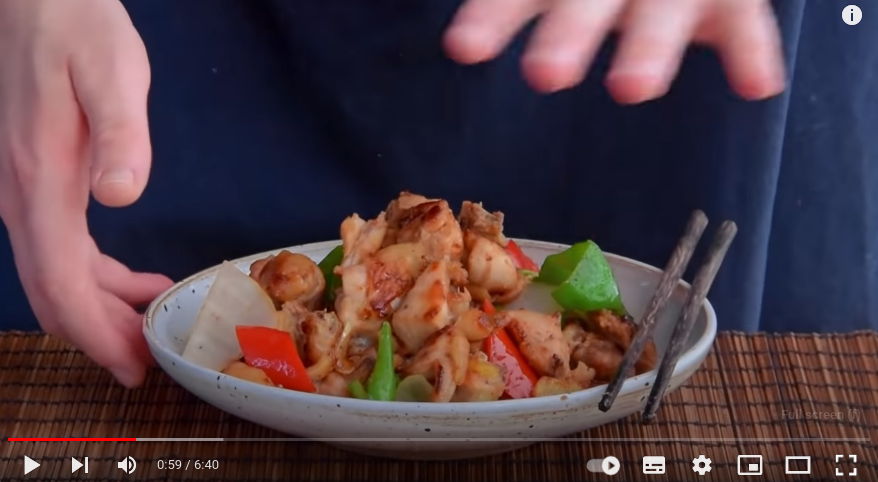

Fry-roast chicken
Source

Description
“Fry-roast” is my personal translation for this – the technique is called “jianju”, a combination of the character for pan-fry (jian, i.e. 煎) and roast/bake (ju, i.e. 焗). While that might be kind of evocative of the Western pan-roasting technique (and there are some similarities), for the most part nothing overly fancy’s going on here. The chicken pieces are pan-fried until golden brown, then you drop the heat a bit and cover the pan so things cook through evenly.
Ingredients
- Chicken, ½ bird -or- bone-in chicken leg -or- boneless thigh (preferably skin-on), ~600g. Ok, so right. Traditionally for this dish what you’d use is about a half a chicken, cleaved into pieces across the bone. I know that even if you’re a bone-in enthusiast like I am though, it’s not like you can swing into your local Stop ‘N Shop and order “one chicken, cleaved into pieces”. So we did also test this with some frozen boneless thigh as well, and honestly? Quite good. Lots of Chinese poultry dishes seem really struggle off the bone (unless they’re deep-fried), so it was cool to see this one held up quite well. That said, I did feel like the dish lost a bit of its soul going completely bone-out, so our recommendation would be to go with the whole leg and do half bone-in/half bone-out. I’ll explain more what I mean in the process below.
- Marinade for the chicken: ½ tsp salt, ½ tsp chicken bouillon powder (鸡精), 1/8 tsp sugar, 1/8 tsp MSG (味精), ¼ tsp white pepper powder (白胡椒粉), 1 tsp cornstarch (生粉), 1 tsp light soy sauce (生抽), 1 tsp chili oil (辣椒油), ~1 tbsp peanut oil (花生油) -or- neutral cooking oil to coat. So their marinade contains a lot of the usual suspects… but specifically for this recipe, it’s important to go easy on the sugar else it’ll scorch (same reason there’s not wine). Their inclusion of chili oil was also a bit of a surprise to me, but it actually really worked in the context of this dish. It won’t make thing spicy really, just gives a bit of depth/background flavor (ala Chef John’s ever-present ‘sprinkle of cayenne pepper’). We used some homemade chili oil, they used bottled, and if that ingredient’s annoying for you just swap it for some cayenne pepper (let’s say… ½ tsp cayenne pepper in that case, then up the oil amount to 4 tsp total?). If it’s easier for you, you can also swap the white pepper for black pepper here.
- To fry with the chicken: ½ red mild chili (红辣椒), ½ green mild chili (青椒), ~8-10 chunks of white onion (白洋葱), ~5 scallion-whites (葱白), ~1 inch ginger (姜), 1 large clove of garlic. For the green mild chili, something like an Anaheim would be perfect… but use your own judgement (poblano, jalapeno, whatever). You can also just swap for bell pepper if you prefer. For the onion, I basically cut the onion in half, use 2-3 ‘layers’ of the onion and just chop those into large chunks. There might be a better way to crack that nut, I dunno.
- To season: ¼ tsp salt, 1/8 tsp black pepper powder (黑胡椒粉). Or to taste, obviously. This’s just kinda a tough dish to ‘taste’ haha, so those were just the amounts I liked with 600g of chicken. Feel free to swap the black pepper powder for white pepper powder if you need.
Steps
- Cut the chicken into ~1.5 inch chunks. If going the leg route, this is what we’d suggest: first slice out the boneless meat-only bits from the thigh and drumstick so that you’re left with a big bone plus ~0.5-1cm of meat surrounding it. Then grab a cleaver and chop up the bone into similar sized on-the-bone chunks. If the attached video, we explain it very poorly (because I was a total moron and forgot to press play until halfway through the shot), but if you’re curious I think we’ve got a better visual at 0:59 in our Sichuan beer duck video. And of course, feel free to use boneless thigh – just do me a favor and promise that you’ll try it on-the-bone one day, too.
- Slice the garlic, slice the ginger into sheets, separate the white part of the scallion from the greens, cut the onion into chunks, cut the chilis into diamonds.
- Marinate the chicken, ~15 minutes. As always, first add all of your marinade ingredients – minus the oil - in a bowl with you chicken and give that a good mix. Always best to go in with your hands so you can really rub it in. Then add in the oil to coat – I usually eyeball this, but this time I measured it out. Roughly one tablespoon’s worth.
- If using a non-stick, no need to add any oil. If a cast iron, add the thinnest possible smear. Heat up the pan over a medium flame until you can drop a touch of water in and it can immediately sizzle away.
- Chicken, in. Separate out the chicken into one even-ish layer.
- Swap the flame to high. Cook the chicken pieces for ~90 seconds, tilting the sides to the center of the flame in order to get this to cook evenly. Do not touch the chicken pieces. You want them to brown.
- Swap the flame to medium-low. Cover. Cook for 2-3 minutes covered – no peeking. If you’re confident your chicken pieces were no bigger than 1.5 inches, go two minutes; if you’re not (or want to be conservative), go for three.
- Uncover. Swap the flame back to high. Check on the chicken pieces. Are they browned to your liking? If not, keep them cooking. I found that on my range it usually took about 30 seconds or so until I was happy with them. [note: after uncovering you’ll likely see a bit of oil rendered out in the pan from the skin, plus a touch of moisture from the chicken. This’ll pop a touch until the moisture’s evaporated, which should also take ~30 seconds or so. Also note: if you’re using skinless, you might want to swirl a touch of oil around the pan at this point].
- Flip the chicken pieces. I like doing my flipping off the flame. Cook for another 90 seconds in the same manner as before.
- Add the garlic and the ginger. Spread around the pan. Cook another 90 seconds in the same manner as before. At this point the other side of the chicken should be nice and browned. If not, keep cooking (or if it’s browned sooner, go onto the next step earlier).
- Add the scallion whites, the peppers, and the onions. Stir fry for ~30 seconds, or until the peppers are looking almost done.
- Add the salt and pepper. Stir fry for another ~30 seconds. Out.